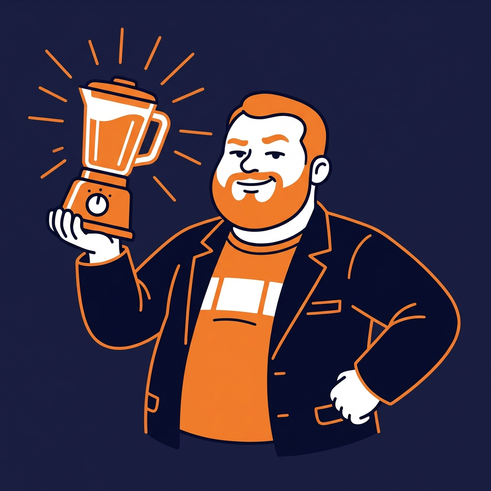

🍊 CITRUS SUNRISE
const sunrise = new Smoothie({ energy: 'HIGH', mood: '☀️' });
⚡ v1.0 — Minimum Viable Protein (1 PM) ~33g protein
{
liquidBase: "coconut water (½ cup)",
citrus: "cold-pressed OJ (¼ cup)",
frozen: ["mango (½ cup)", "pineapple (¼ cup)"],
fresh: "banana (½)",
dairy: "Greek yogurt (½ cup)",
superfoods: ["hemp hearts (1 Tbsp)", "trail mix nuts (handful)"],
supplements: ["Multi Collagen (1 scoop)", "Good Green Vitality (1 scoop)", "Root'd (1 packet)", "Creatine (5g)"],
sweetener: "Manuka honey (1 Tbsp)",
ice: "as needed"
}
💪 v2.0 — Scale Mode // this guy recovers (5 PM) ~48g protein
{
liquidBase: "coconut water (½ cup)",
citrus: "cold-pressed OJ (¼ cup)",
frozen: ["mango (½ cup)", "pineapple (¼ cup)"],
fresh: "banana (½)",
dairy: "Greek yogurt (½ cup)",
protein: "NuZest Clean Lean (1 scoop)", // 💪 POWER BOOST
superfoods: ["hemp hearts (1 Tbsp)", "trail mix nuts (handful)"],
sweetener: "Manuka honey (1 Tbsp)",
ice: "as needed"
}

— E. Bachman, Incubator Owner & 10% Stakeholder